project 4
stitching photo mosaics
Project 4 is about stitching photos into mosaics. In Part A, I pick correspondences between photos taken from one center of projection by hand and recover the homography with least squares. This homography allows us to inverse-warp one image into the other's plane, and blend the two together to create a panarama effect.
Part A: Image Warping and Mosaicing
A.1: Shoot the Pictures
All photos were taken on my phone, two sets from a rooftop and one from the sidewalk. I kept the phone in one spot and rotated it between shots so that each pair is related by a homography, with roughly half of the frame overlapping.
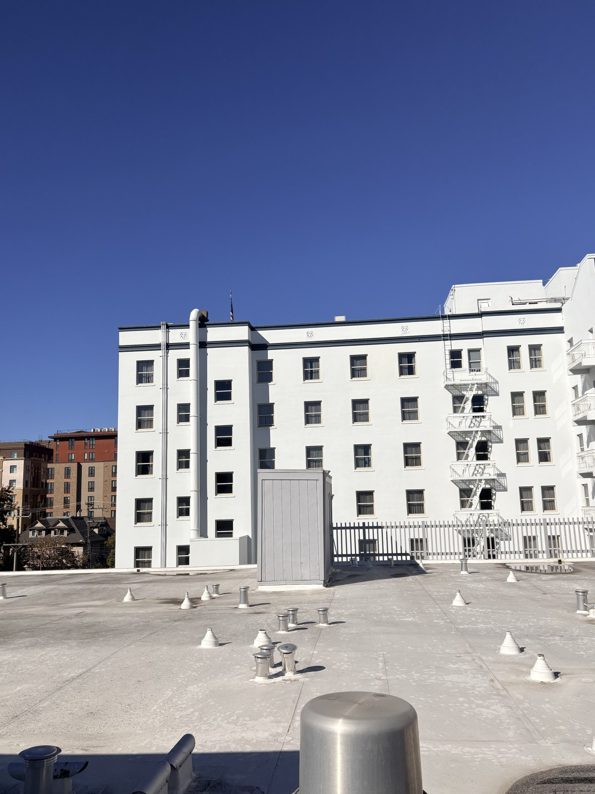
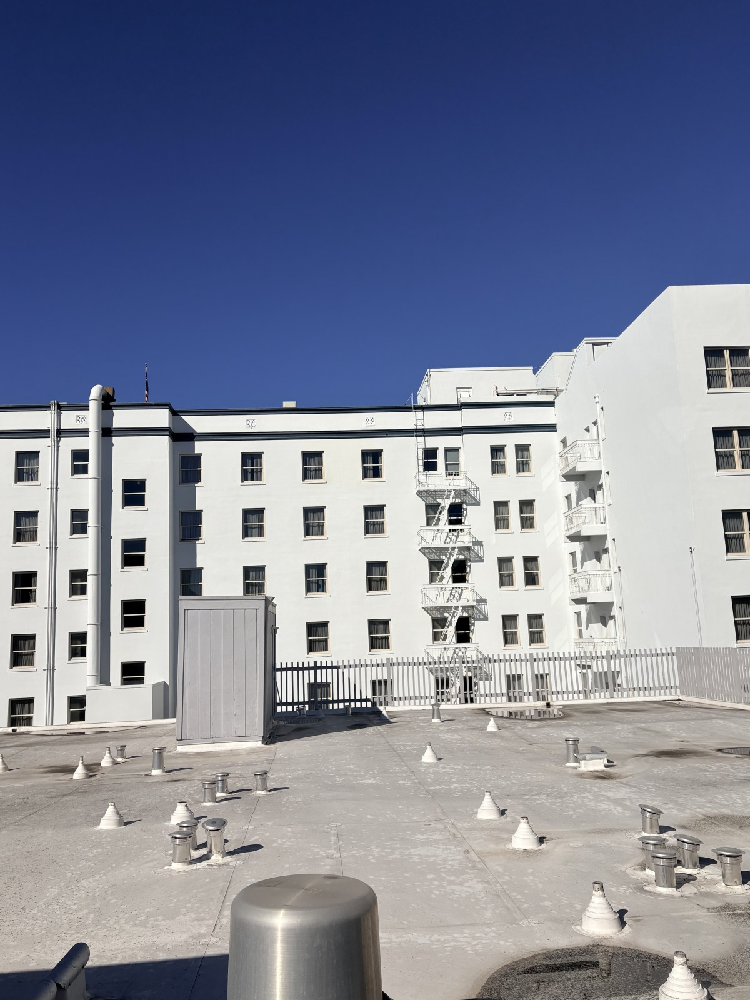
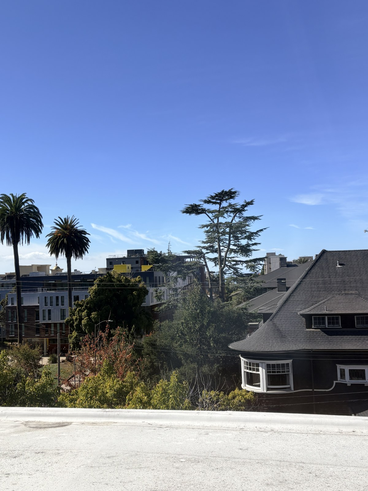
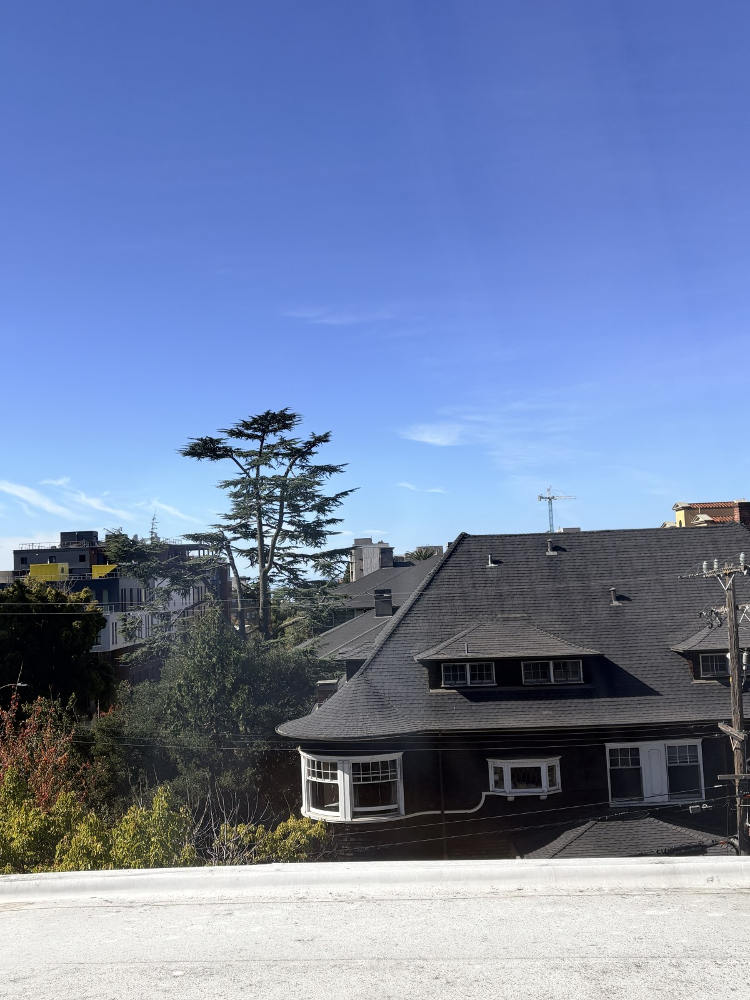
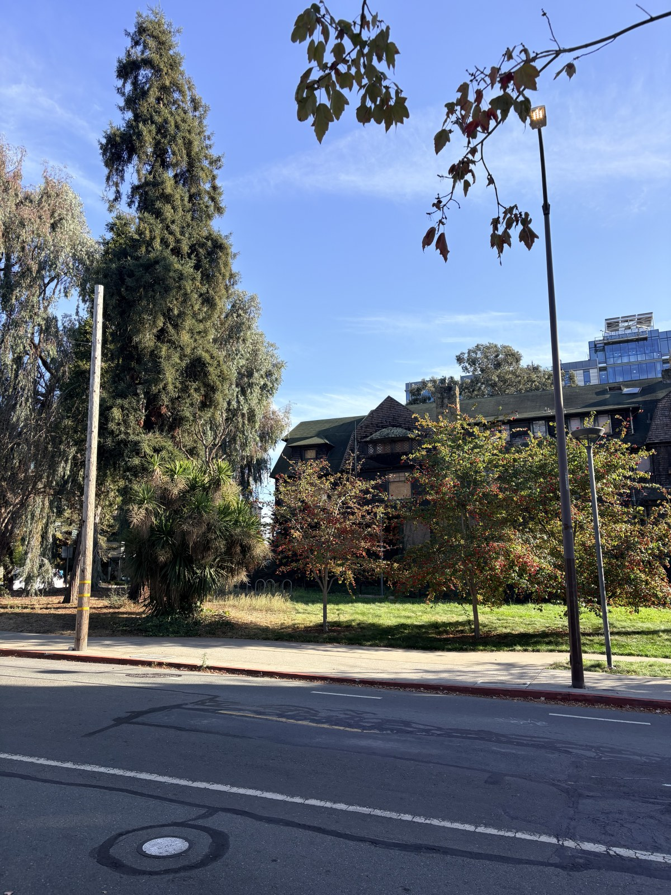
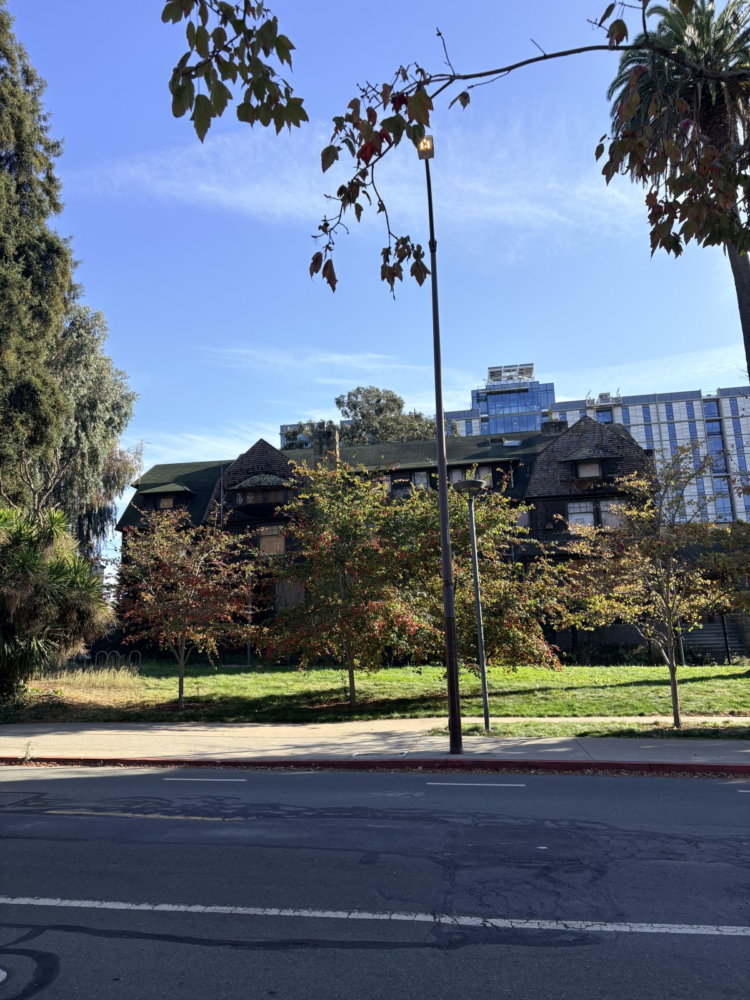
A.2: Recover Homographies
I labeled 8 correspondences per pair by hand with the course correspondence tool and saved them as JSON. Window corners and the corners of the rooftop shed gave the most reliable points.
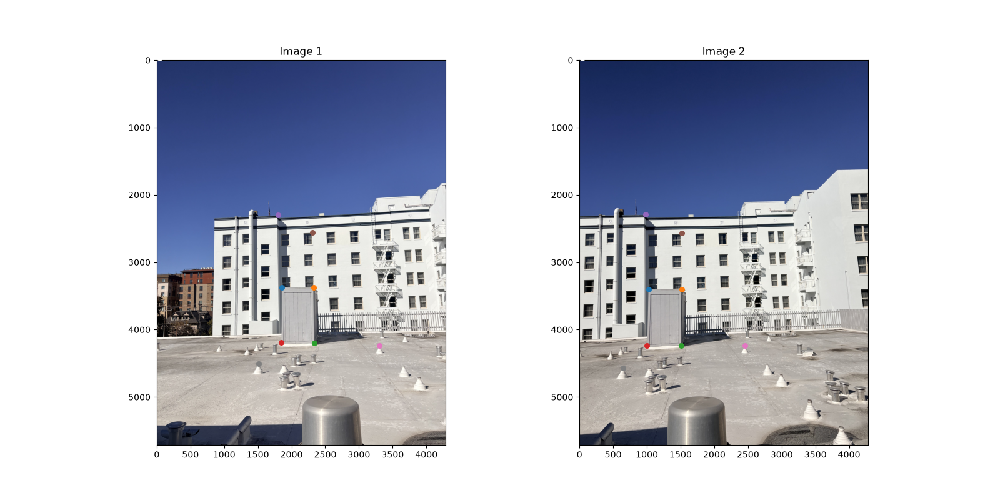
computeH takes im1_pts and im2_pts, two n×2 matrices holding the clicked points (xi, yi) in image 1 and (ui, vi) in image 2. H maps (x, y) → (u, v) through homogeneous coordinates: multiplying [x, y, 1] by H gives [u′, v′, w′], and dividing by w′ gives u = u′/w′ and v = v′/w′. Fixing the bottom-right entry of H to 1 leaves 8 unknowns h1 … h8.
given im1_pts = [ x1 y1 ] im2_pts = [ u1 v1 ]
[ x2 y2 ] [ u2 v2 ]
[ : : ] [ : : ]
[ xn yn ] [ un vn ]
[ u' ] [ x ] [ h1 h2 h3 ]
[ v' ] = H [ y ] H = [ h4 h5 h6 ]
[ w' ] [ 1 ] [ h7 h8 1 ]
u' = h1·x + h2·y + h3 u = u' / w'
v' = h4·x + h5·y + h6 v = v' / w'
w' = h7·x + h8·y + 1Multiplying u = u′/w′ and v = v′/w′ through by w′ and moving everything that depends on h to the left gives h1x + h2y + h3 − u·h7x − u·h8y = u and h4x + h5y + h6 − v·h7x − v·h8y = v. Both are linear in the unknowns, so each correspondence i contributes a 2×8 block Ai and a 2×1 block bi. Stacking all n of them gives the system Ah = b.
A_i = [ x y 1 0 0 0 -u·x -u·y ] b_i = [ u ]
[ 0 0 0 x y 1 -v·x -v·y ] [ v ]
[ x1 y1 1 0 0 0 -u1·x1 -u1·y1 ] [ h1 ] [ u1 ]
[ 0 0 0 x1 y1 1 -v1·x1 -v1·y1 ] [ h2 ] [ v1 ]
[ x2 y2 1 0 0 0 -u2·x2 -u2·y2 ] [ h3 ] [ u2 ]
[ 0 0 0 x2 y2 1 -v2·x2 -v2·y2 ] · [ h4 ] = [ v2 ]
[ ... ] [ h5 ] [ .. ]
[ xn yn 1 0 0 0 -un·xn -un·yn ] [ h6 ] [ un ]
[ 0 0 0 xn yn 1 -vn·xn -vn·yn ] [ h7 ] [ vn ]
[ h8 ]
A : 2n × 8 h : 8 × 1 b : 2n × 1
With 4 points A is square and the system solves exactly; with more it is overdetermined, so computeH solves it in the least-squares sense and reshapes [h1 … h8, 1] into the 3×3 matrix H.
The main thing I took away from this part was how much simpler and faster it is to project many points at once, stacking them into a matrix and multiplying by H in one shot instead of looping, which I leaned on heavily for the warps below.
H = [ 1.1724 -0.0138 -1018.61 ]
[ 0.1187 1.1271 -343.64 ]
[ 3.6e-05 5.0e-06 1.00 ]A.3: Warp the Images
I implemented two different warps, warpImageNearestNeighbor and warpImageBilinear. Both warps use inverse mapping so the output has no holes. I push the four corners of the input through H to get the output bounding box, build a grid of every output pixel (u, v, 1), multiply by H−1, and divide by the third coordinate to get source coordinates (x, y). Only pixels whose (x, y) lands inside the input image are filled so that everything else stays black.
Nearest neighbor (warpImageNearestNeighbor) rounds (x, y) to the closest pixel and copies it. Bilinear (warpImageBilinear) takes the 2×2 neighborhood at x, y and averages the four pixels.
Rectification. To test the warp on a single image, I clicked the four corners of a rectangular object and mapped them to a hand-chosen rectangle. The output canvas is the bounding box of the whole warped photo, so the wall around the target gets warped along with it. The order of the target corners matters: pairing the clicked corners with the square in a different order flips or rotates the rectified result, so the same code can flip an image just by reordering four coordinates.
H = [ 0.4279 0.0684 -463.14 ]
[ -0.0083 0.4947 -720.58 ]
[ -1.0e-06 1.3e-04 1.00 ]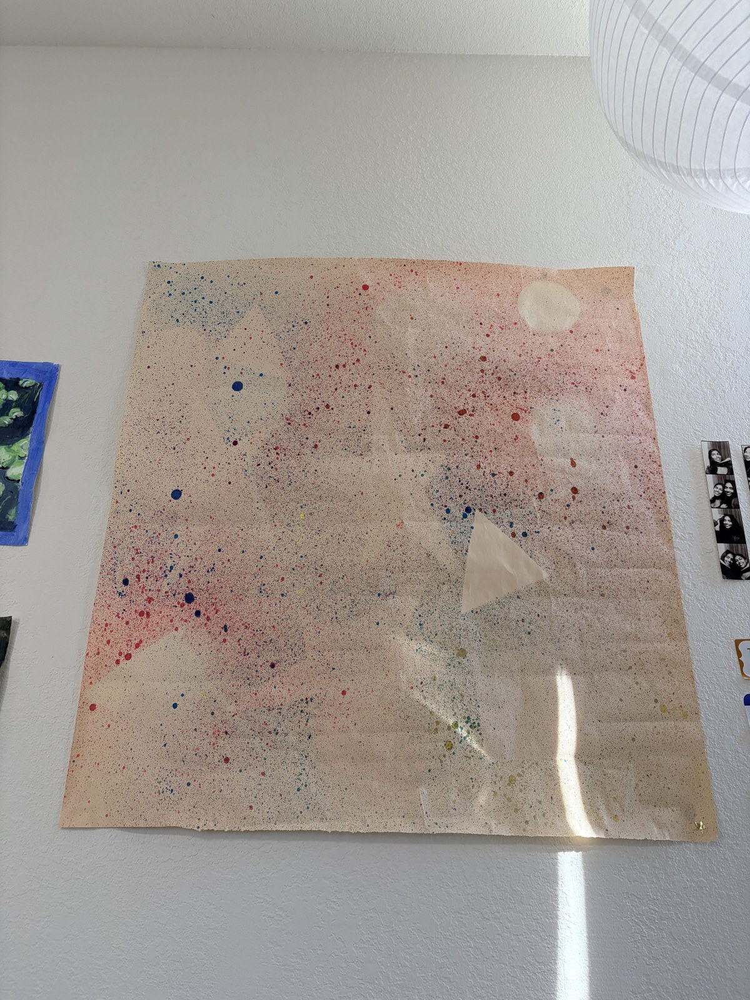
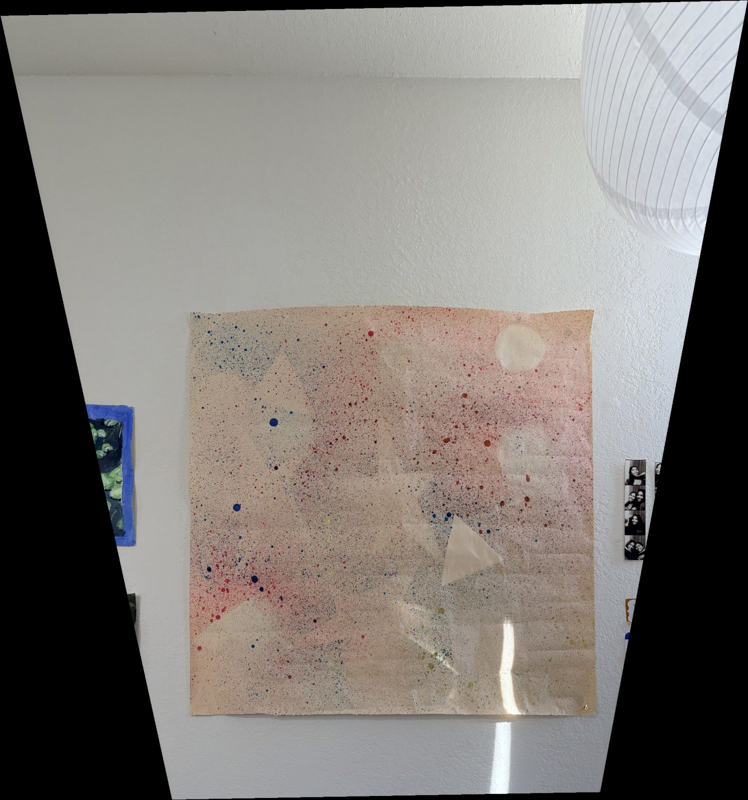
H = [ 0.2003 0.0007 -177.40 ]
[ -0.0490 0.2070 -186.55 ]
[ -1.1e-04 1.4e-05 1.00 ]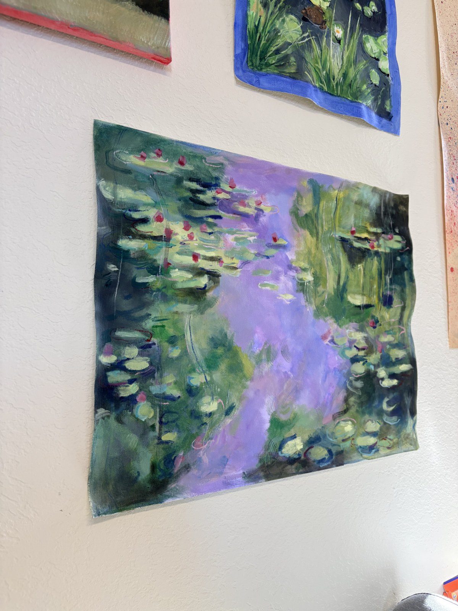
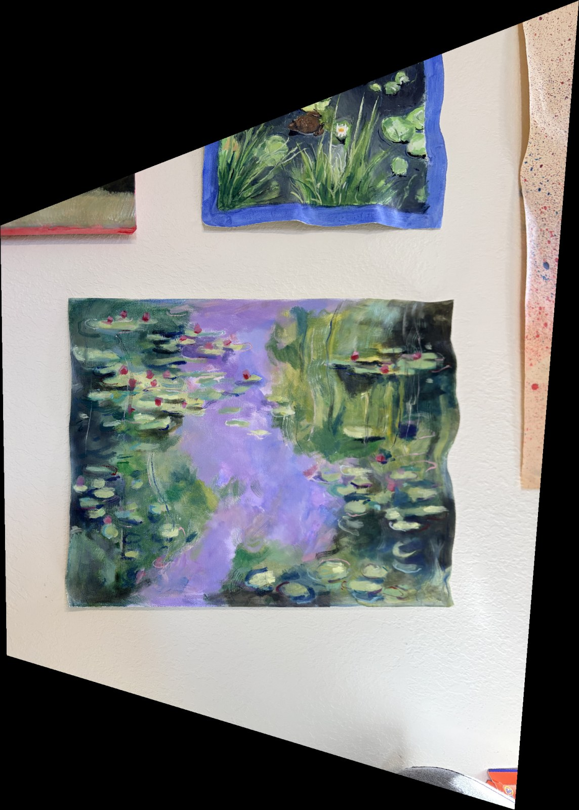
Nearest neighbor vs. bilinear. At full size the two look the same. But when you zoom in, you can tell the difference near the edges. Nearest neighbor keeps hard pixel edges along the poster corner and the painting's border, while bilinear smooths them out a bit more.
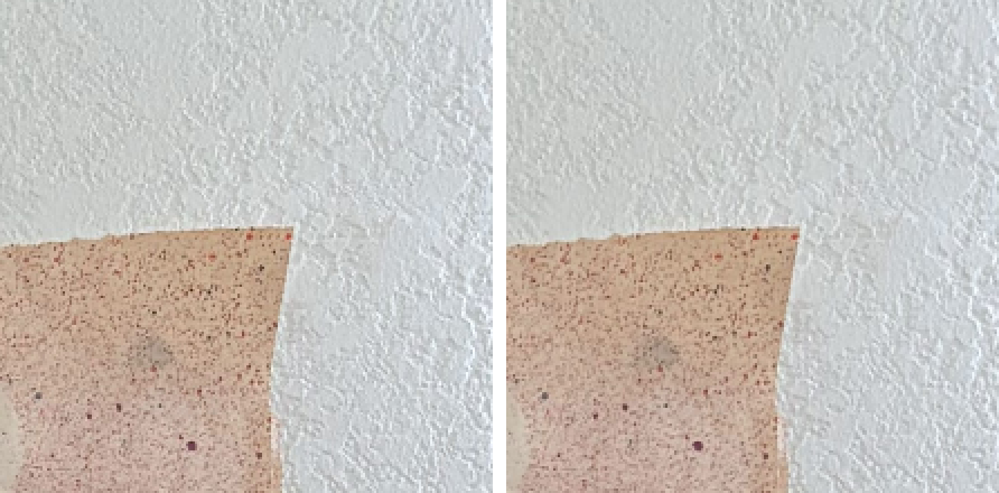
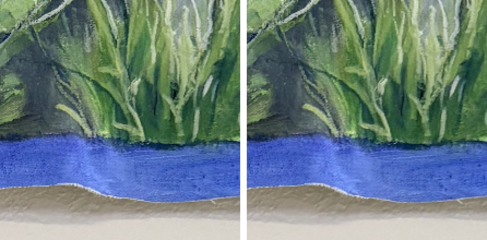
A.4: Blend the Images into a Mosaic
I keep image 2 fixed and warp image 1 into its plane. Image 1 is warped with both the homography matrix H and a translation T and image 2 is pasted at an offset.
Getting the overlap took many tries. My first version simply placed the warped image 1 on top of image 2, which leaves a strong edge wherever the two images disagree. The second averaged the overlapping pixels equally: both images are now visible in the overlap, but the boundary is still a hard line and any misaligned detail shows up twice. What finally worked was radial weighting. Each image gets a weight that is 1 at its center and falls off linearly to 0 at its edges; for image 1 the weight is evaluated in its original coordinates by reusing the inverse-mapped (x, y) grid. The mosaic is the weighted average (w1I1 + w2I2) / (w1 + w2) over the whole canvas, which reduces to a plain copy wherever only one image has weight. I believe an edge-based scheme, weighting by the distance to the nearest image edge instead of the distance from the center, should work as well.
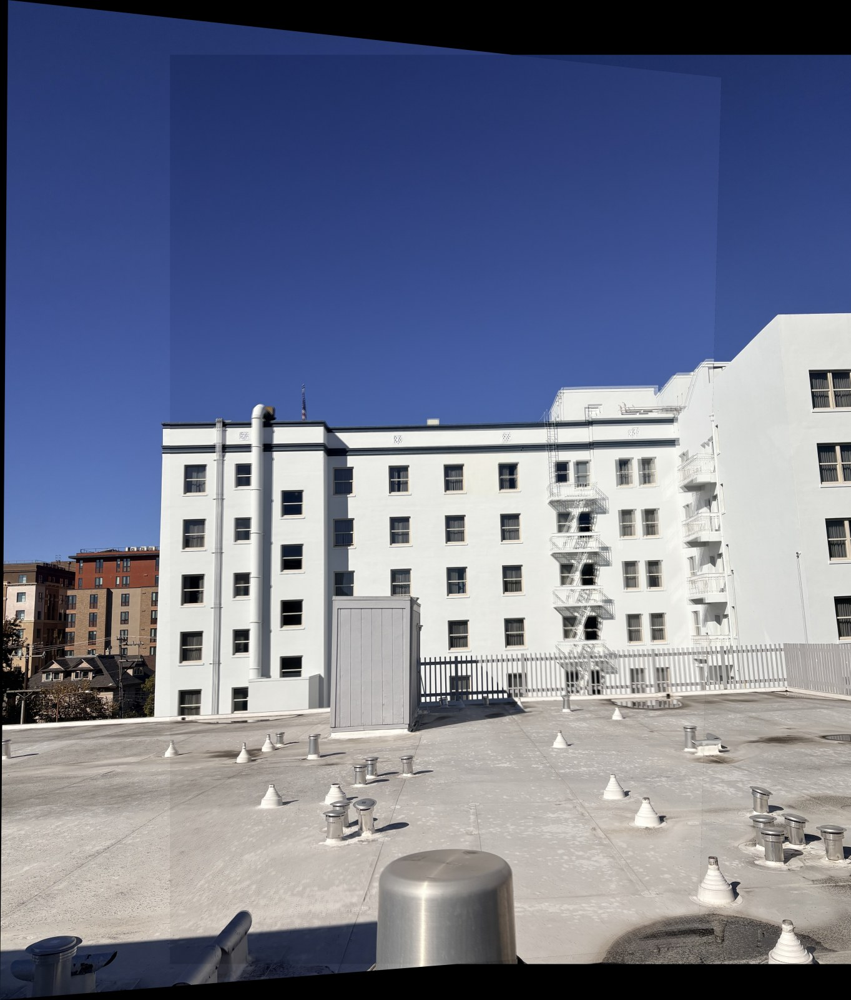
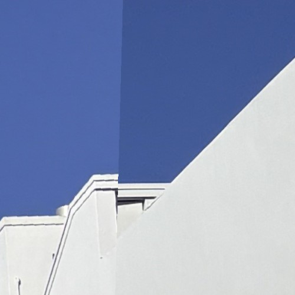
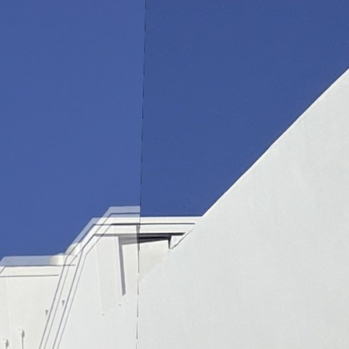
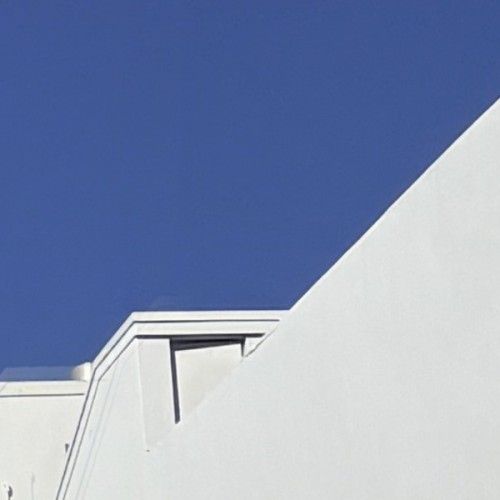
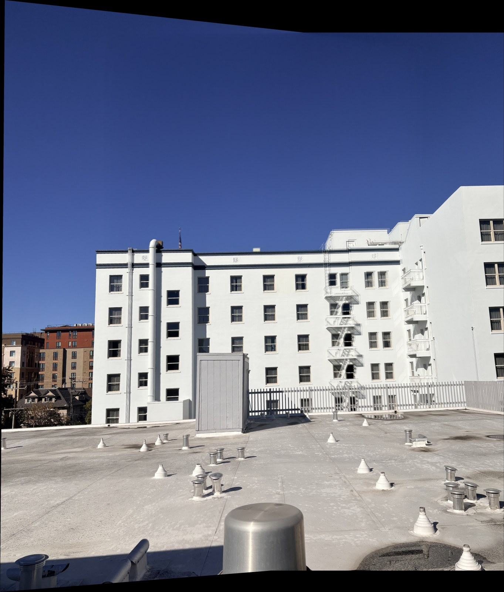
Where the correspondences are placed decides where the two images line up. For mosaic 2 I picked 20 points and deliberately put almost all of them on and around the large tree, the focal point of the scene, so that it would align as well as possible. It does: the tree and the roofline behind it are sharp. The cost is that fine detail with no correspondences nearby, like the bushes and grass near the bottom of the frame, is only aligned as well as the homography extrapolates there, and it shows up doubled.
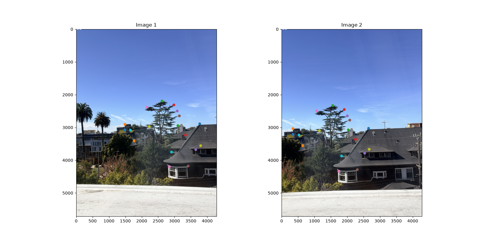
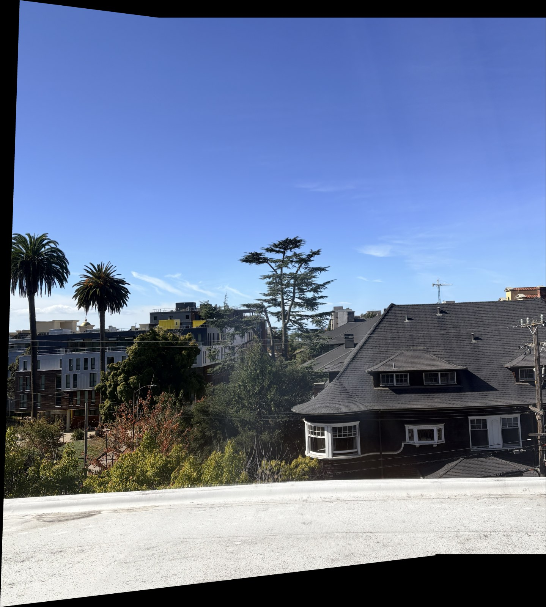
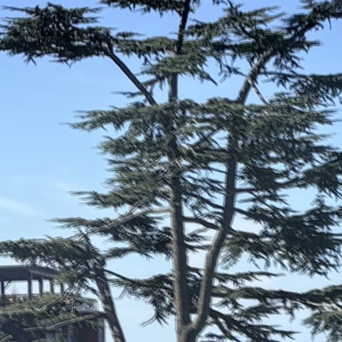
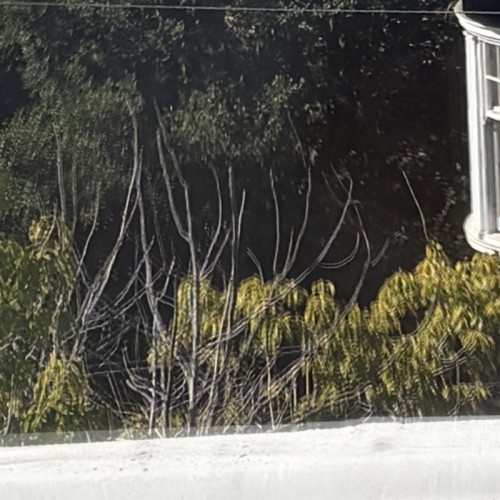
Mosaic 3 was the hardest to blend, and I think the photos are to blame: I most likely shifted the center of projection slightly between the two shots, so no single homography fits both. This shows up in the fit itself. The largest residual of the least-squares system, max |Ah − b|, is about 60 px for this set, compared with 8 px for mosaic 2 and 4 px for mosaic 1, even with 24 correspondences. This resulted in ghosting on the trees and the light pole in the overlap.
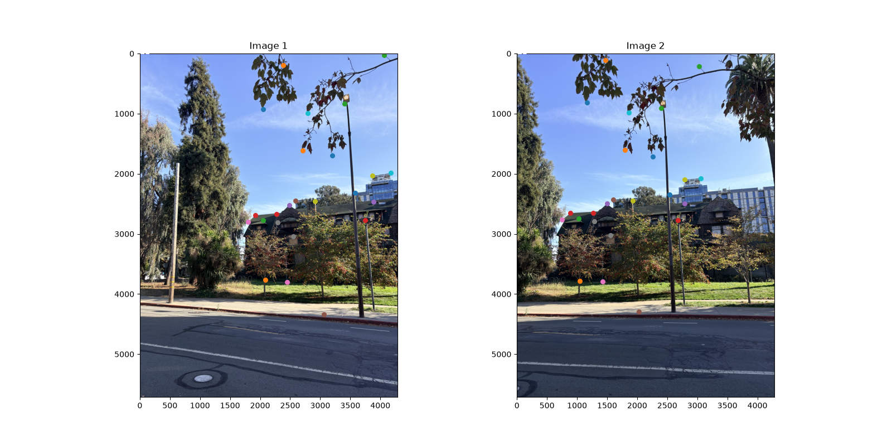
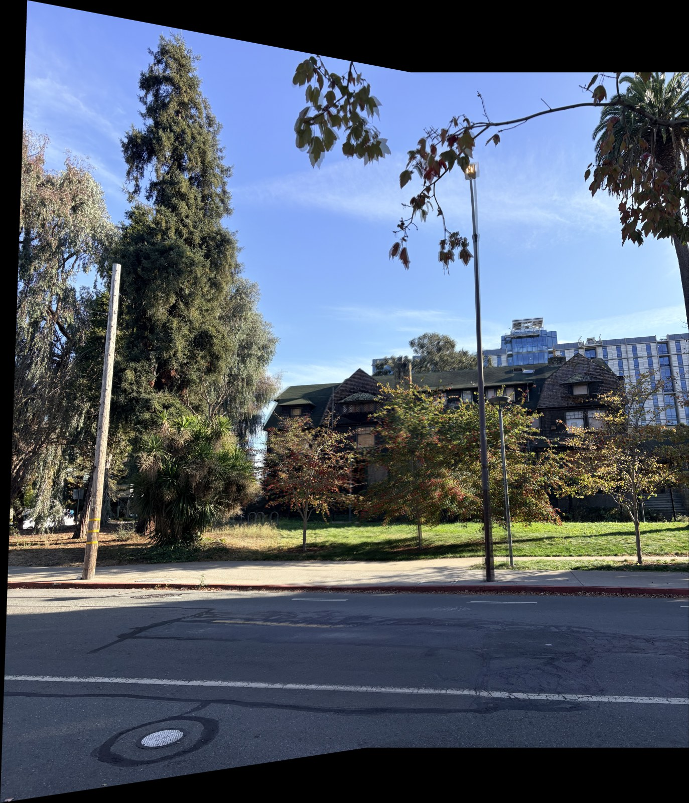
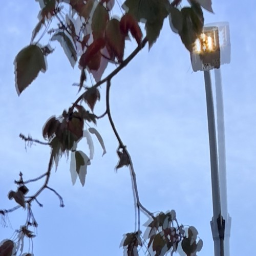
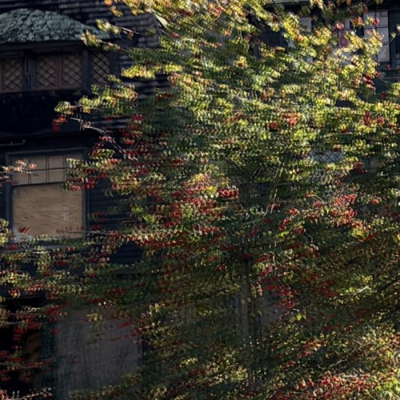